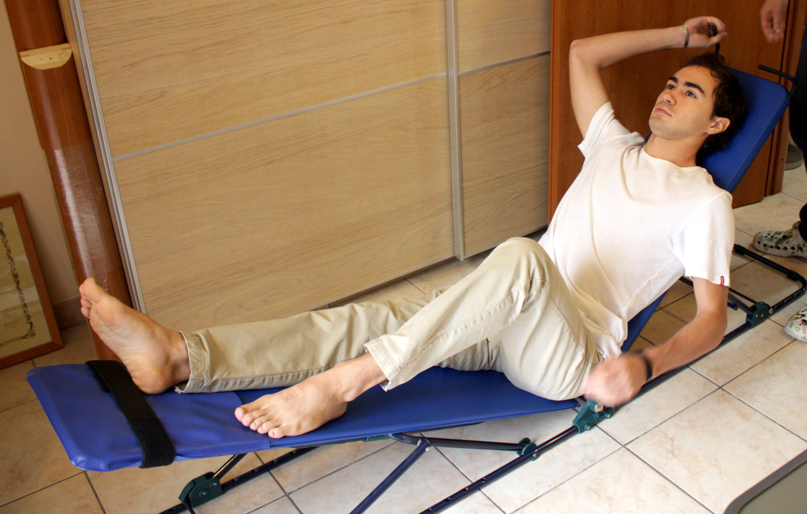

Pancafit
Effetti terapeutici
La Pancafit® é uno strumento utile a riallungare e rilassare la muscolatura del corpo. Grazie a una serie di posture specifiche, la Pancafit svolge sui muscoli e le articolazioni un’azione passiva che aiuta la distensione e il riequilibrio di posture scorrette. È normalmente utilizzata per riabilitare la muscolatura dopo un trauma e rilassare il corpo e scaricando tensioni e ed emozioni negative.
Patalogie trattate
In una società dove ipomobilità, posture scorrette e stress sono all’ordine del giorno è evidente che il corpo ha bisogno di un aiuto esterno per decontrarsi e ritrovare il proprio equilibrio. Pancafit è ideale per riattivare la muscolatura e curare dolori muscolari e articolari come mal di schiena, dolori lombari, dorsali, cervicali, male alle articolazioni in generale, pubalgia, ecc.
Cos'è e come funziona
È un semplice attrezzo composto da una base in ferro a cui sono articolate due tavole di legno vincolate al centro della base metallica. Le due tavole sono libere di inclinarsi dal lato opposto, formando così una struttura a V più o meno aperta a seconda delle esigenze di lavoro dell’operatore. Il trattamento con Pancafit®, avviene rispettando un principio di causa-effetto. Non si interviene direttamente sulla zona dolorante, ma si procede stimolando i muscoli e gli arti che lavorano meno (ipocinetici) facendoli tornare ai normali livelli di attività muscolare. Questo permette di riequilibrare le forze tra tutti i muscoli coinvolti nei movimenti, alleggerendo il carico di lavoro che grava su quelli più utilizzati. Talvolta piccoli traumi che riteniamo insignificanti possono produrre squilibri che diventano fonti di dolore e scarsa mobilità.
Controindicazioni
Prima di sottoporsi ad esercizi sulla Pancafit® il paziente deve presentare al medico qualsiasi documentazione relativa a traumi articolari e patologie fisiche.